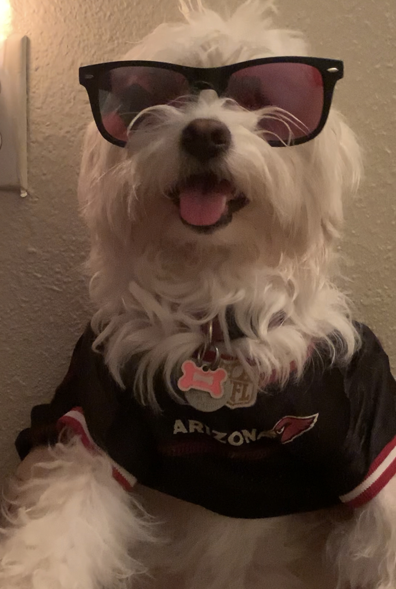
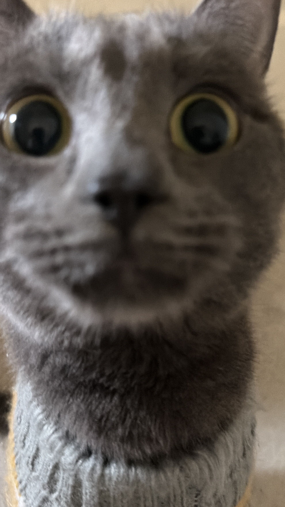
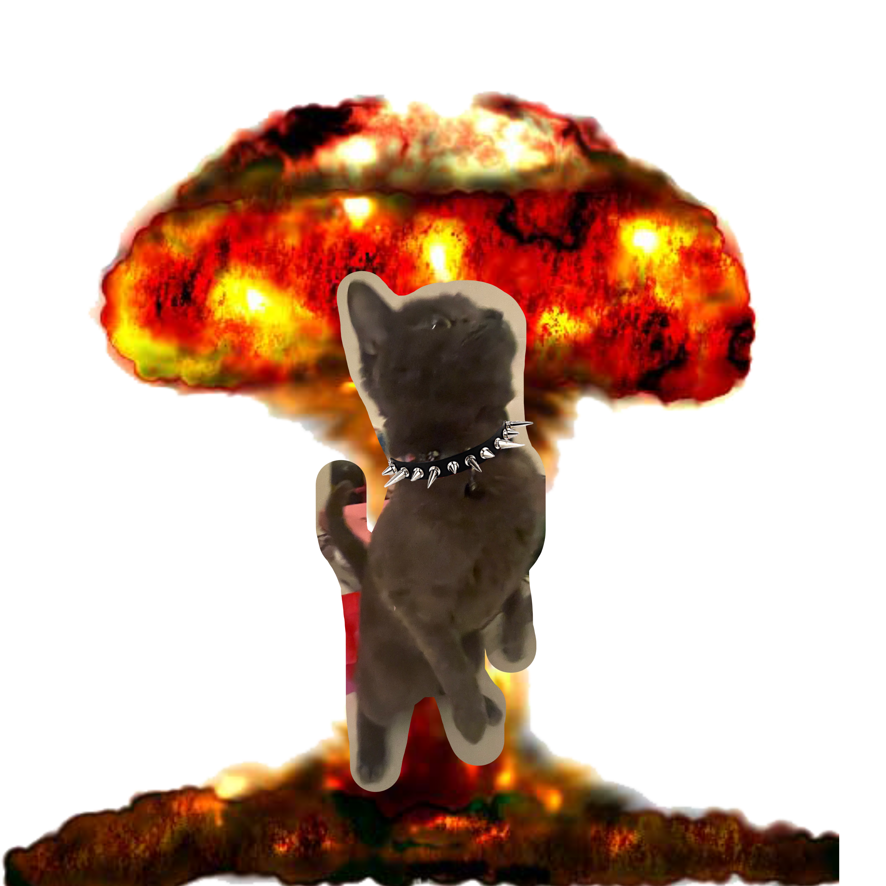
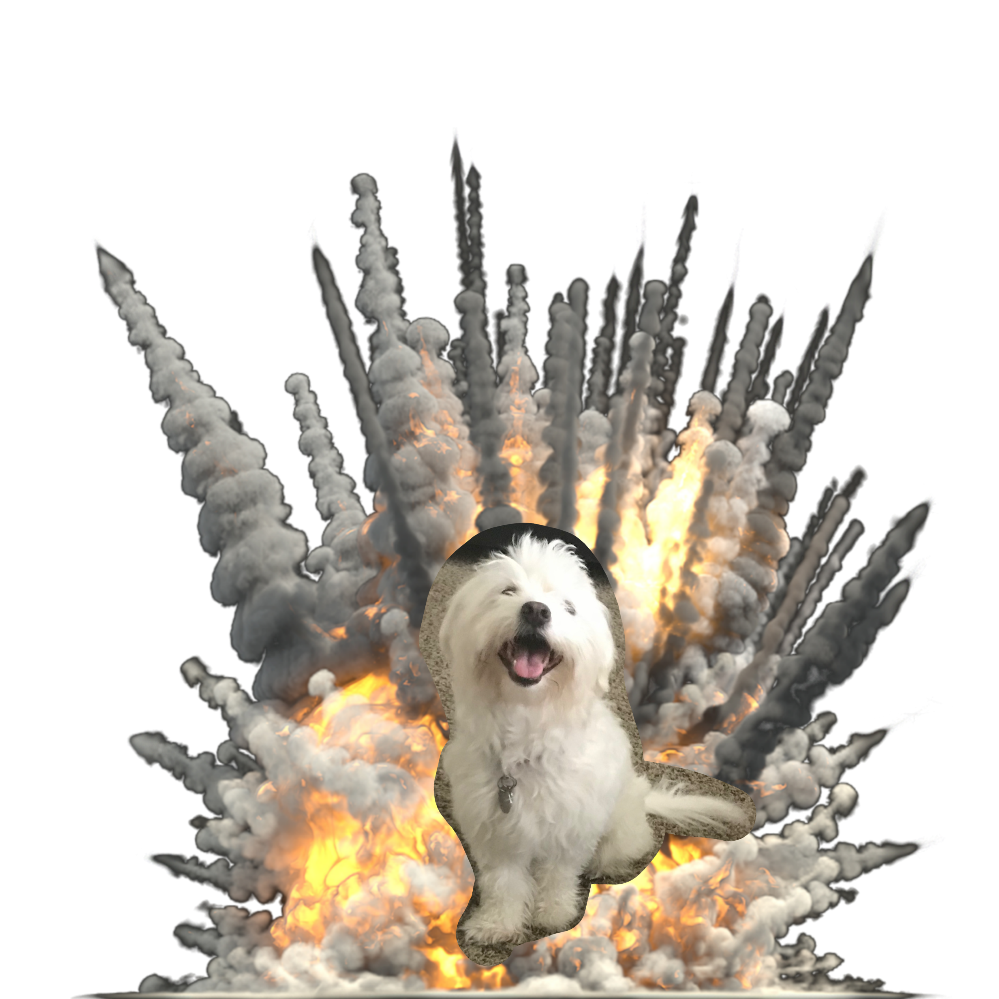

🐈⬛💢 Things Oppa HATES 💢🐈⬛
Who Is Ella?

Ella is my dog, and I've had her for a while.
While she is very friendly and quiet, she doesn't really like Oppa very much. He tends to eat her food sometimes...
Oppa's Reaction

Oppa is a very curious and mischievous cat, and he tends to get into trouble sometimes. He doesn't really like Ella either, and he often tries to steal her food or play with her toys.
This has led to some interesting interactions between the two of them, and I've captured some of these moments in photos and videos.
Oppa's Reasons for Disliking Ella
Oppa has a few reasons for disliking Ella. One of the main reasons is that she sleeps on his cat bedsometimes, which he doesn't appreciate. He also doesn't like it when she tries to play with his toys or invade his personal space.

